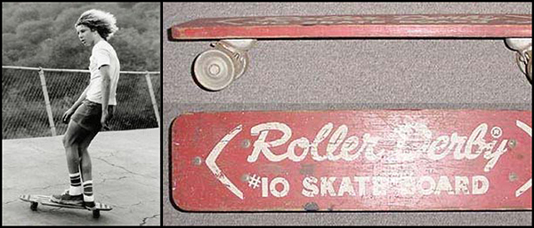
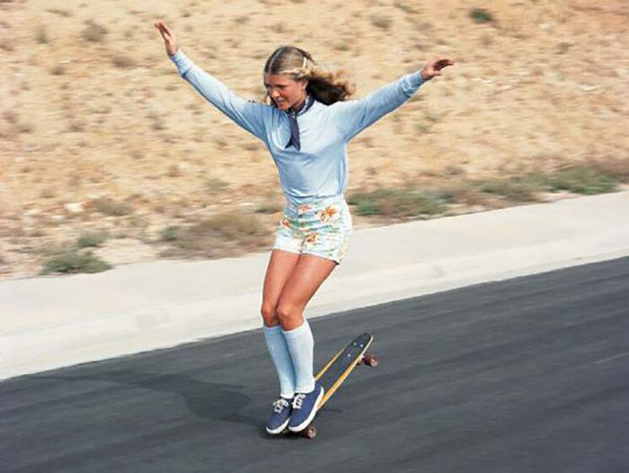

History of Skateboarding
By the early 1950s, surfing can be traced as the source of skateboarding. Some surfers had the idea to transfer the feeling of riding waves onto the streets to defy times of days with a gentle swell. Not without any reason these dudes were called “asphalt surfers”. At two spots in the world a kind of a skateboard was developed at the first time in the early 1950s: California and Hawaii. They used shorter surfboards and wheels made out of metal without some bearings. In the late 1950s, skateboarding had a first peak. During the post-war period, the U.S. economy boomed and this also affected the toy industry. During that time, the toy industry became aware of the board with wheels. In 1959, Roller Derby released the first official skateboard with some new technical developments. Thereby, the handling characteristics have been improved. For this reason, skateboarders were able to develop new tricks and maneuvers.
Between the years 1959 and 1965, skateboarding became more and more popular in the United States. Particularly affected were the states on the east and west coasts. Due to the industrial development, the skateboard’s status changed from toy to sports equipment. In 1962, the surf shop “Val-Surf” in Hollywood sold the first self-produced skateboards. These boards featured a typical surfboard shape and roller skate trucks and were sold as complete boards. In the same year, the company Patterson Forbes developed the first industrially produced complete boards with more developed trucks. In 1963, the publisher of the “Surf Guide Magazine” Larry Stevenson released the first advertisement for skateboards in his magazine. Also the clothing industry specialized more and more on skateboarding. One of the most famous skateboarding shoe brand named Vans was established in 1966. From this day on, Vans supported skateboarders from all over the world. Especially shoe companies like Vans, Etnies, Converse and DC Shoes developed and manufactured skateboarding related footwear and streetwear.
The only consistent thing is change and so it came to a point where everything changed for skateboarding. Frank Nasworthy’s invention of urethane wheels in 1972 made it possible for skateboarding to come back. Nasworthy started the company Cadillac Wheels and with the new material it was possible to ride smoother, faster and more comfortable. A variety of disciplines such as freestyle, downhill and slalom experienced a real high point. New magazines like the “Skateboarder Magazine” from 1975 were published and new events were launched. In 1976, the first artificially created skate park was inaugurated and new parks emerged with new elements such as vertical ramps and kickers. Then in 1978, Alan Gelfand invented a maneuver that gave skateboarding another revolutionary jump: The “Ollie”, which counts as the greatest trick ever invented and completely revolutionized skateboarding. That was the birth of street skateboarding!

In the early 1990s, skateboarding went through a further depth phase due to the increase in various trend sports. So skateboarding went back to its roots. But because of the digitalization, skateboarding maintained its presence in public. From the mid-1990s, the modern skateboarding experienced a next high phase, which continues until today. Mega events like the “X-Games” were launched and televised. Due to numerous magazines, all the events, videos and last but not least the internet, skateboarding became common worldwide. Because of brands like Chocolate, Girl Skateboards or Flip Skateboards, the skateboarding hardware was developed more and more and skateboarders could buy high-quality skateboards in every bigger city. More indicators are the big and worldwide known events of “Street League”. “Street League Skateboarding” is a contest series for international pro skaters. Here, you only see the best street skateboarder you can think of like Nyjah Huston, Eric Koston, Paul Rodriguez, Andrew Reynolds, Ryan Sheckler or Torey Pudwill. Due to the cash prizes of 200.000 US Dollars or more for the winner and 10.000 visitors at the “Street League” stops, skateboarding has become a professional sport.
In Germany, street skating is the most popular discipline at contests just like in the USA. The European and German skate scene is independent, has its own industry, pros and a national contest series. This is an evidence of how big the role of skateboarding is in our society. Skateboarding has become a job for a lot of people. Because of the increasing networking inside the skate scene, skateboarding will grow and bring more innovations in the future. But for the most of us, skateboarding is and will be a hobby and an attitude to life.